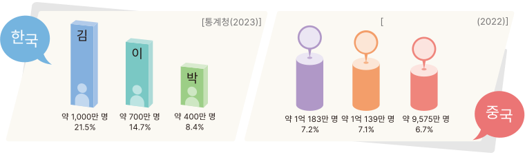

한국과 중국의 성씨
우리나라의 성씨는 김(金), 이(李), 박(朴), 최(崔), 정(鄭)
순으로 많습니다.
중국에는 현재
王(Wáng),
李(Lî),
张(Zhãng),
刘(Liú),
杨(Yáng),
陈(Chén)
등의 성씨가 많습니다.

王
李
张
国家统计局
中国信息报
한국과 중국의 성씨
중국에는 23,813개의 성씨가 있는데, 그중에는 한 글자부터 열 글자로
된 성씨가
다양하게 있습니다. 또한 숫자,방향, 동물 등을 뜻하는
특이한 성씨도 있습니다.

一
(Yå)
东
(Dõng)
猴
(Hóu)
诸葛
(Zhñgê)
伙尔川扎木苏他尔只多
(Huô’êrchuãnzhãmùsñtã’êrzhîduõ)